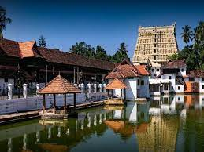
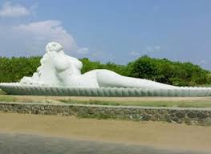
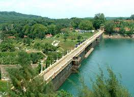

Places To Visit
Padmanabhaswamy Temple
Dedicated to Lord Vishnu, Sree Padmanabhaswamy Temple is one of the famous places to visit. This holy shrine is one of the 108 abodes of Lord Vishnu. A large number of devotees throng the temple on multiple occasions.
Shanghumukham Beach
Shanghumukham Beach is an ideal place for those seeking peace and serenity. Far from the hustle and bustle of the city, this place is known for breath-taking sunrises and sunsets; visit to this beach is one of the best things to do in Trivandrum .The calm environs and exquisite shoreline here is undoubtedly commendable.
Neyyar Dam
There are indeed number of things to do in Trivandrum, including paying a visit to picturesque Neyyar Dam and its neighbouring wildlife sanctuary. Built in 1958, the dam is an ideal family picnic spot which is set against the mesmerizing landscape. The area is famed for obtaining several medicinal herbs as well.